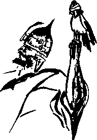

Biraz önce olanlar Azrail’e parmak ısırtmıştı. O da nihayet bir emir kuluydu.
“Git İstanbul’da sultanın canını al” denmişti, o da almıştı. Hwace’nin bedeni Berke’nin ayakları dibinde kaskatı yatarken, Azrail Osmanlı tarihinin en kısa hüküm sürmüş –tamı tamına on iki saniye– sultanının canı ile dönüş yolculuğuna çıkmıştı bile. Hwace’nin canı yaltaklanmaya başladı:
“Melek Bey Oğlum, me’aşallah hem süratlisiniz hem de pek dikkatli kanat kullanıyorsunuz. Bana da öğretsenize! Asuman-ı cennette lazım olacak herhalde...”
Azrail bu dalkavuklukları duymadı bile. Ya da duymazdan geldi.
Berke’ye gelince... Berke’nin zihnini bir sinsi firak, içini ise muhteşem bir karanlık kaplamıştı. Hwace, Hami, Mehlika, Osman Hulûsi ve kendi can kurdu tarafından terk edilmişti. Etrafındaki tüm evrenin kapkara volkan kumlarından oluşan bir çöl olduğunu, bu çölün diplerinde bir yerlerde Osman Hulûsi’nin omuzları genişliğinde bir delik açıldığını, kumların bu delikten yavaş yavaş aktığını, böyle giderse, tahminen beş altı milyar yıl sonra bu acımasız çölün aynen başka bir evrene taşınacağını ve o zaman, görünmez bir elin tek bir hareketle bu kum saatini ters çevireceğini tahayyül etti.
“Ah izansız Osman, ceng û cidâl kapısını kapattın belki ama kâinatımızı da deldin bıraktın” diye söylendi.
Yüreğinin sıkıntısı âfâka omuz vermiş sıradağlar gibi yükseliyordu.
“Karışanım görüşenim kalmadı, aslında sevinmeliyim, nedir bendeki bu halet?” diye merakla sordu. İsterse ordusunu alır, sonu gelmeyen fetihlere çıkar, isterse haremde zevk ü sefaya dalar, isterse tuhaf şeyler biriktirir, Hint’ten, Çin’den kervanların nadir ve acayib nesneler getirmesini bekleyerek vakit geçirirdi.
Hiçbirini yapmak istemiyordu. Bunların ne kadar can sıkıcı şeyler olduğunu düşündü. Kendini atlatılmış, soyulmuş, tüm güçleri elinden alınmış hissediyordu. Öyle bir şey yapmalıydı ki dünya durdukça nam olsun. Bu kâinatı delip de giden Osman Hulûsi kurtçuğunun yaptığını soldursun...
Hwace’nin bedeni başında ne kadar bekledi, tam olarak bilemiyordu. Yüzükoyun yerde yatan ihtiyarın sağ elinin işaret parmağı, odanın bir köşesindeki Duvduvani'yi gösteriyor gibiydi. Uğruna seferlere kalkıştığı, oluk oluk kanlar akıttığı kitabı eline aldı... Kitap boş, bomboş, kendi dünyası kadar boştu. Yalnızca tek bir sayfasında kâfir hurufu ile bir şeyler karalanmıştı.
Ürkek bir kaplumbağa gibi korka korka kafasını tekrar odanın içine sokan Moşe’yi gördü. Hekimbaşı, sultanın öldüğünden son derece emin, “kötü" haberi gereken yerlere ulaştırmadan önce son kez kontrol etmek istemişti. Berke’yi kanlı canlı karşısında görünce hiç bozuntuya vermeden sultanın ayaklarına kapandı. Berke,
“Bırak bunları bre sülük azmanı, gidi hacamat müptelası zalim! Ne yazıyor şurada?" diye kitabı Moşe’nin eline verdi.
Moşe yazıların Türkçe olduğunu anlayıncaya kadar epeyce bocaladıysa da sonra oldukça rahat bir şekilde okudu. Sultan Hüsrev asrında bir Peynircizade Osman’ın Felemenk diyarına gidişiyle ilgili küçük bir kayıttı. Berke omzunu silkti. Bu ad altında bir sultan herhangi bir zamanda hüküm sürmediği gibi, hadise de pek saçma geldi kendisine. Hangi aklı başında adam kalkar da Felemenk’e giderdi? Odayı terk ederken,
“Ağalara söylen, Hwacemizi tekfin eylesinler...” talimatım verdi.
Moşe Efendi,
“Hünkârım ya bu kitap?” diye sorunca,
“Ne idersen it... Al, senin olsun” diyerek çıktı...
Hekimbaşı akşam evine dönerken kırpık kâğıtçılar sokağına uğradı. Belki birkaç akça veren olurdu bu az kullanılmış deftere. Sokağın girişinde, seyyar eskicilerden bir adam neredeyse yolunu kesti:
“Onu bana sat, kaç para istersin?”
Moşe Efendi, adamın perişan hal olmasından mıdır, yoksa yalnızca dalga geçmek istediği için midir bilinmez,
“Yirmi altın” deyiverdi.
Adamın hiç sesini çıkarmadan paraları tek tek avucuna sayması, zavallı Moşe Efendi’nin sonradan çok, pek çok hayıflanmasına neden olacaktı. Hele sonraları, emekli kızlarağası Nehruz Ağa’dan Duvduvani Efendi öykülerini dinlerken kahrolacak, servetinin ve kalan ömrünün epey bir kısmını, kaçırdığı bu hâzineyi bulmaya hasredecekti. Öldüğünde Moşe Efendi’nin terekesinde çıkacak olan tam yedi yüz otuz adet boş defter, yüzyıllar sonra büyük nazariyelere yol açmış, bunun memlekette ilim ve irfanın gelişmesine sedd ü bend vurmak isteyen cehûdlarm Sion protokolü icabınca yaptıkları bir iş olduğu teması çeşitli mahfillerde ustalıkla işlenmişti. Oysa gerçek, her zaman olduğu gibi pek basitti. Zavallı Moşe Efendi, insafsız bir eskici oyununa gelmişti.
Sultan II. Berke’nin can kurdu hâlâ bedeninde olmuş olsaydı, herhalde o gece kıvrana kıvrana sabahı ederdi. Sultan sabaha kadar yine uyumadı ama muhteşem ve nâmütenâhî bir sessizlik deryasına gark olmuştu. Tahtının üzerinde hiç kıpırdamadan, kurduğu bağdaşı bile bozmadan oturdu. Kızıl sakallarını izmihlal ve inkıraz ummanlarının onulmaz hüzünlerine, yok oluş enginlerinin koyu lacivert koylarının koynuna koyverip salarak uzattı, iki katma çıkardı.
İlk bakışta Anadolu yakasından doğuyormuş gibi yapan fakat Berke’nin pekâlâ bildiği üzere, aslında Asya-ı Vustâ taraflarından doğan kızıl bir güneş, karlar altındaki payitahtın son Osmanlı gününü aydınlatmaya başladı. Berke, dost-düşman hiç kimsenin akıl sır erdiremediği ve erdiremeyeceği bir şey yapmış, kendi hanedanını ilga etmeye karar vermişti:
“Ben cemi’ halayıkın sahibi miyim ki müstakbel evladım bunları tevârüs etsin? Mülkün mülkiyeti bende midir ki onlara devredeyim, haşa, sümme haşa! Var yürü Berke Han, dip atan Kara Osmancık denli cesaret izhâr eyle, kısmetse anca olur, nasipse bunca olur... Gerisini il düşünsün!’’
Berke’nin “azat buzat, git beni cennet kapısında gözet" kararını ilk öğrenenler, harem kadınları oldu. Bazı genç cariyelerin belli belirsiz mütebbessim halleri bir yana; çoğunun tepkisi, insanın kanını donduran, uluma ağlama arası çığlıklar kopararak elbiselerinin yakalarını sökmek, sökük yakalarından ak göğüslerine toz toprak bırakıyor gibi yapmak, yüzlerini tırnaklarıyla yırtmak ve kanlı gözyaşları dökerek asumana bir vaveyla salmak oldu.
Çığlıklara koşarak haremin kapısına yalınkılıç dayanan aklı karalı ağalar ve zülüflü zülüfsüz muhafızlar, sultanı karşılarında et, kemik ve sinirden mürekkep bir irade demeti olarak bulunca, dipsiz şaşkınlıklara düçâr oldular.
Berke, hepsinin şimdiye kadar duyduğu ve bir Osmanlı'nın duyabileceği en dehşetli emri verdi:
“Hay dokuz tuğ çekin, eğlenmen, dakika fevt etmen!"
Bütün saraydan sorumlu olan akağa kekeleyerek itiraza kalkıştı:
“Sultanım ec... ecdâd-ı izâmınız asla dokuz tuğ çektirmemiştir. Ancak Densiz Han lanetullah-ı aleyh eflâk-ı seba ve âfâk-ı ekalim aleyhine hurûc ettiğinde buna ictisar etmiştir. Ayin-i Osmani ve ber muceb-i kanun-u padişahi iktizasınca...”
Kalkıştı ama Berke’nin mavi-gri gözbebeklerinin etrafında alev alev yanan kızıl haleleri görünce, küffar eline geçen sarp bir kale gibi aniden sükût etti...
Berke hâzinenin açılmasını emretti. Mehter inanılmaz bir duyarlılık ve hüzünle, hiçbir Osmanlı’nın çalınacağına asla ihtimal vermediği “Ağdı göklere Âl-i Osman, ağlasın felekler, yırtılsın asuman”ı çalmaya başladı.
Musiki ve haber, payitahttaki tüm asker ocaklarına yanar bir od gibi düştü. Bu yanık havanın tek bir anlamı vardı: Hem sultan hem de bütün erkek varisleri ölmüştü. Berke, müteveffa Sultan Burak’ın tek erkek çocuğu olduğu ve henüz bir oğlu da olmadığı için, anlaşılan o ki, sultan terk-i dünya eylemişti.
Kapukulu süvarileri eyer bile vurmadıkları atlarının boynuna düşmüş, dörtnala saraya koşuyor, yalınayak yeniçeriler dalkılıç olmuş, saraya seğirtiyor, bazılarının, karlı-buzlu kaldırımlar üzerinde kayan süvarileri geçtiği görülüyordu.
O zamana kadar, ağır hareketleri ile unvanlarının hakkını vermeye gayret eden molla ve softaların ise hiçbirinin başında sarık yoktu. Yaşlı, genç, onlar da saraya doğru akıyor, onların da herkes gibi ecel kuyrukları rüzgârda dalgalanıyor, ayakları kayıp düştükçe, içine düşmüş oldukları Arapça lügat paralama gayretleri akıllarının ucundan bile geçmiyor, Anadolu Türkçesinin çeşitli şivelerinde en oturaklı küfürleri savuruyorlardı.
Aklı birazcık başında kalmış olan Ercümend Paşa, Yedikule’de tutulan Kırım hanzadesini getirsinler diye iki dilsizi o canibe göndermişti, kendisi tahtırevanına bile çıkmaksızın, en güçlü kölesi Hamaseddin-i Habeşi’nin sırtına binmiş, kamçılarıyla Sarayburnu’na akan bu mahşeri kalabalığı yarmaya çalışan hizmetkârları sayesinde olabildiğince hızlı bir surette saraya ulaşmaya çalışıyordu. Şehirde bir fevkalâdelik olduğunu anlayan donanma kapudanları tüm leventlerini gemilerin yattığı Haliç’ten karaya dökmüşlerdi. Geçmiş derya cenklerinin mayhoş hoşluğu ile hâlâ sarhoş ve paytak denizciler, Süleymaniye taraflarının sarp yokuşlarına sardırmış, nefes nefese koşuyor, “benim” diyen değme peyklere meydan okuyorlardı.
En ufak bir yeniçeri patırtısında yağmaya uğrayacakları korkusuyla hanelerine kapanıp kapılarını berkiten zimmiler bu sefer mevc vura vura bir sel gibi coşup taşan kalabalığa karışmış, ilerliyorlardı. Atalarının, Osmancık Han’ın orduları peşine takılarak Asya-ı Vustâ’dan geldiğine inanılan binlerce sokak köpeği, canları pahasına korudukları mahallelerinin sınırlarına kadar koşuyor, sonra aniden durarak ölüm kokusu almışçasına, başlarını semaya kaldırıp acı acı uluyorlardı. Eski gazalardan artmış ve artık kendi sokaklarından daha ötelere gitmeye gücü yetmeyen yaşlı savaş kurtlarının bu tüylü yoldaşlara sarılarak kaba avaz ile ağlamaları kanları donduruyor, en katı yürekleri bile ıslanmış kefen ketenine çeviriyordu.
Kentte bulunan az sayıdaki Avrupalı tüccar ve diplomat, “ha çöktü, ha çökecek” diye, alıp verdiği nefesi bile saydıkları, “bu kışı çıkarırsa, gelecek kış..." diye hakkında mektup üzerine mektup düzüp döşendikleri “kâfir imparatorluğun" çöküş anına şahitlik yaptıklarını biliyor, işin tuhafı hiçbiri buna sevinemiyordu. Bazılarının efkâr-ı umumiyenin ağır havasına kapılarak hüngür hüngür ağladığı görülüyordu.
Mehterin önce “dikkat âlempenah geIiyor”u ve sonra “karşıla”yı çalmaya başlaması o kadar şaşırtıcı oldu ki, sarayın dış avlusuna yığılmış kalabalığın vaveylası bıçakla kesilmişçesine durdu.
Berke’yi taa Macaristan’dan İstanbul’a taşıyan kara aygırın dev gövdesi burnundan buharlar fışkırtarak saray kapısından çıkarken, binlerce çift göz, sultanın, kapı pervazına çarpmamak için başını eğdiğini zannetti. Bu çıkışla beraber sanki görünmeyen bir güç dalgası da sarayın dışına taşmış, binlerce insanın yüzüne cenup ellerinden kopup gelen bir samyeli, bir sıcak hava kasırgası gibi çarpmış, boş bulunan bazılarının sendelemesine, bazılarının da yere düşmesine yol açmıştı. Sultanın âteş-i sûzânı eriştiği yerlerde karları eritiyor, buzlar bile muhakkak ve mukadder firkatin acısı ile gözyaşına boğuluyorlardı.
Berke, orada bulunanların yürek perdelerini titreten, bağırsaklarını birbirine geçiren bir sesle haykırdı:
“Mülgadır âl-i Osman,
münkarizdir hanedan,
vurulsun boynu kara lalenin,
varsın boş kalsın lâledan!”
Sonra eliyle işaret etti, içoğlanları deri torbalardaki altın ve gümüş paraları leblebi küreğine benzeyen küçük küreklerle havaya savurmaya başladı. Hiçbir Allah’ın kulu eğilip tek akçe almadı. Berke gizliden halkıyla gurur duydu.
“Alın ey ibadullah, rüşvet değil a, âlem içre tuğramız kalsın, bizden bir ufak hatıra” dedi daha yumuşak bir sesle.
İnsanlar, altınına gümüşüne bakmaksızın, karların içinden topladıkları paralardan birer tane alarak gerisini en yakınlarındakine vermeye başladılar. Birkaç saat içinde bu paralar, en ücra mahallelerdeki kötürüm, yatalak gazilerin ve elden ayaktan düşmüş ihtiyar ninelerin bile ellerine ulaşacaktı...
Berke, beyaz uzun paçalı poturu içinde tir tir titreyen Şıkk-ı Evvel Defterdarı Hasip Parkinson Paşa’ya,
“Taşrada da böyle itsinler,” emrini verdi, sonra avını gözetleyen bir alıcı kuş, pek fena ve kaygısızca gelişmiş bir sungur gibi başını ağır ağır Derya Kaptanı Konyalı Aşur Paşa’ya çevirdi:
“Denizlerimin kaptanı paşa, söyle de bozkırdan gelen bakır dipli gemiyi deryaya indirsinler...”
Dondurucu soğukta tomur tomur ter döken tecrübeli bozkır denizcisi yararsız olduğunu bile bile, iki dizinin üzerine çökerek inledi:
“Medet ya padişahım!”
O aralık, kıyamet-i sugrâdan bir sahife olan bu vahim günün karmaşasında babasını kaybeden küçük bir oğlanın cılız sesi, suskun kalabalığın kulaklarında yankılandı:
“Baba neredesin?"
Kalabalık can ü gönülden ve bülend avaz ile bu çığlığa yankı verdi:
“Babamız neredesin, bizi yetim koyup nereye?”
Sonra herkes, usta bir ressam tarafından bir kıyamet tablosuna hapsedilmişçesine sustu.
Berke hafifçe gülümseyerek atını denize doğru sürmeye başladı. Hayvanın ayakları kardan bir yastık üzerinde hiç ses çıkarmadan süzülüyor, adeta bir kızak üzerine raptedilmiş tahta bir oyuncak imişcesine kayıyordu. Hiç kimse bu sükûn ve sükûtu bozmaya cesaret edemiyor, zaman yine eğrilmeye başlamış, uzuyor, uzuyordu.
Sonra bu kâinatın kubbesi de İstanbul’un tüm minarelerinden aynı anda verilmeye başlanan salâlar ile parçalandı. İmparatorluğun böyle dokunaklı bir akapellanın yarattığı kavruk bir çöl musikisi eşliğinde veda etmesi, herkesin ciğerlerine işlemişti.
O gün Berke haricinde ağlamayan kimse kalmadı.
Berke en kısa yoldan sahile inmiş, sonradan bir Yeni Cami ile müzeyyen olup olmayacağı bile belli olmayan meydanın kıyısında, bakır gemisinin gelmesini bekliyor, denizden kopup gelen rüzgârın yüzüne çarptığı tuzlu buz zerrelerine hiç aldırmıyordu.
Ercümend Paşa’nın sarayın önündeki vedaya geç kalan Habeşi kölesi, sultanı burada yakaladı. Berke, buz üzerinde çift burgulu siyaseteyn taklalarını en azından Hwace’si kadar ustaca atan bu kocamış siyaset pirine döndü. Yürüyemediği için iki kölesi sadrazamı koltuklamış, öyle getiriyorlardı. Kara aygırın ayakları dibinde koltuklarının altından ellerini çektiler. Paşa, dizkapakları hurdahaş olmuş tahta bir kukla gibi yere yığıldı. Berke bir an Ercümend’in yerine sadrazamı buraya taşıyan köle Hamaseddin’i nasb ve tayin etmeyi düşündü. Sonra kendine göre omuz, Ercümend Paşa’ya göre kanat silkti.
“İbâdullah isterse cumhur ve şûra eylesin, ne hakkım var?” diye düşündü. Yalnız kendi elleriyle ibadullahın başına musallat ettiği bu beşeri yıkıntıyı temizlemesi gerektiğini anladı. Berke’nin,
“Ver mührümü bre matûh, gidi bunak” diyen sesi paşanın yüzünde bir kırbaç gibi şaklamış, paşayı korktuğuna uğratmıştı. Umulmayan bir çeviklikle ayağa fırlayarak ne kadar dinç ve güçlü olduğunu gösterme sevdasına düştü. Hami gibi Ahd-ı Atik okumadığı için hankanlar hakkında bilgisizdi. Dolayısıyla sultanı bir gaga darbesiyle kendisini ikiye bölecek bir sungur suretinde gördü. Söylemeyi kurduğu,
“Ben bu sakalı değirmende değil, devlet-i âliyye hizmetinde ağarttım” cümlesini söyleyemeden kuzu kuzu mührü teslim etti...
Bunlar olurken kızıl bakırla kaplanmış bir köke olan gemi sahile yanaşmaya, lenger atmaya çalışıyordu. Berke bu manevranın tamamlanmasını beklemedi, atının başını denize çevirdi, atalarından Ilaçmış’ın yaptığı gibi, hayvanı mahmuzlayarak buz gibi sulara soktu.
Birkaç dakika sonra gemideydi. Şehri seyrediyordu. Kara aygıra bindirdiği iki denizci, birazdan kıyıya çıkacaklardı. Geminin tüm tayfası demek olan bu iki levendin kıyıya çıkmalarını, birinin saygısız bir hareketle Ercümend Paşa’nın mor harmaniyesini ihtiyarın sırtından çekerek aygırı kurulamasını keyifle seyretti.
Denizcilikten hiçbir şey anlamamaktan ziyade, herhangi bir limanda lengerendâz olurum endişesiyle, geminin demirini toplamak yerine pereng-i satvet’in müthiş bir darbesiyle zinciri kesti. Boğaz’dan gelen bir rüzgârı yelkenlerine dolduran köke, Akdeniz istikametine doğru nazlı nazlı süzülmeye başladı. Nereden çıktığı belli olmayan bir sis kökeyi bir saklıyor, bir meydana çıkarıyor, gökteki kış güneşinin bakır kızıllığındaki ışınları geminin kızıl bakır gövdesine yapışarak orada kalıyordu.
Sultan Berke-i Sânî Han atalarının kentinden, cihan payitahtından ve cihanın tüm kaygı ve kederinden, Asya-ı Vustâ şamanlarının dev bakır kazanlar içinde haşladığı kurban etleri kemikten nasıl sıyrılırsa öyle sıyrıldı.
Osman Hulûsi bu kâinattan öyle ayrılmıştı, kendisi böyle ayrıldı.